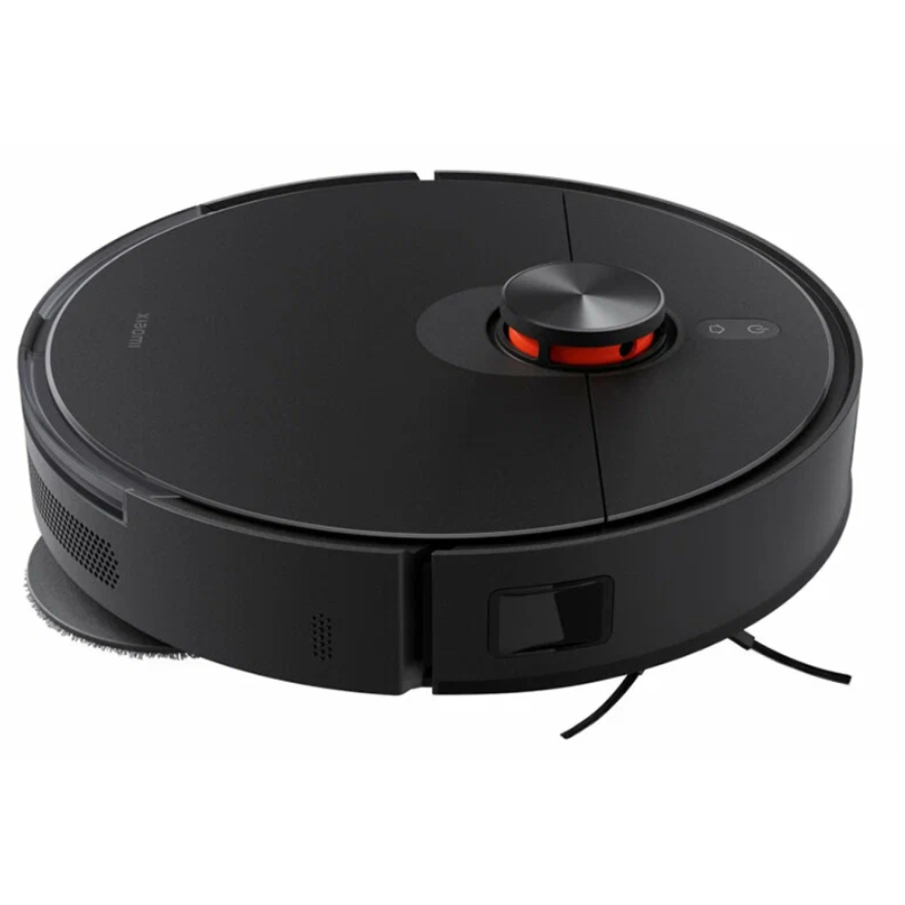

Роботы пылесосы
Робот-пылесос Xiaomi Robot Vacuum S20+ B108GL (международная версия, черный)
Предложения продавцов 39
Отзывы покупателей 11

Обладает компактным, минималистичным дизайном и выпускается в нескольких цветах. Этот пылесос оснащён комбинированным резервуаром для одновременной сухой и влажной уборки, что упрощает уход за разными типами напольных покрытий. Пылесборник объёмом 300 мл и резервуар для воды на 250 мл позволяют устройству работать в течение длительного времени без необходимости частого обслуживания.
Характеристики
Общая информация
- Дата выхода на рынок: 2024 г.
- Заводская вилка питания подходит для розеток нашего региона. Инструкция на русском языке
- LDSлазерная навигационная система
- Объезд препятствий
- Улучшенная система уборки и мытья полов
- Двойные подушечки для мытья полов для лучшего удаления пятен
- 6000Па мощность всасывания
- Аккумулятор 5200 мАч, до 170 минут непрерывной уборки
- Умная уборка
- Точная уборка в сложных местах и мытье полов
- Интеллектуальное обнаружение ковров с автоматическим подъемом подушечек швабры (до 7 мм)
- Управление через приложение
- Страна производства Китай
Основные
- Назначение: для уборки пола
- Мощность: 55 Вт
- Сила всасывания: 6 000 Па
- Время уборки: 2 часа 50 минут
- Цвет корпуса: белый
Конструкция
- Влажная уборка: да
- Тип влажной уборки: вращающиеся тряпки
- Боковые щетки: 1
- Турбощётка: разборная
- Влажная салфетка (мини-швабра): да
- Объём пылесборника: 0.45 л
- Объём резервуара для воды: 0.29 л
Навигация
- Умная навигация: да
- Системы навигации: контактный бампер, лидар, датчики перепада высоты, лазерные датчики препятствий
- План нескольких этажей: да
Функциональность
- Функциональные особенности пылесоса: локальная уборка, уборка по расписанию, виртуальная стена в приложении, автовозврат на базу, определение ковров, подъем тряпки на ковре
- Дистанционное управление: мобильное приложение
- Интеграция в "умный дом": Mi Home
Аккумулятор и время работы
- Тип аккумулятора: Li-ion
- Емкость аккумулятора: 5 200 мА·ч
- Время зарядки: 6 часов
Комплектация
- Робот-пылесос, 1 шт.
- Турбощетка, 1 шт.
- Контейнер для пыли, 1 шт.
- Резервуар для воды, 1 шт.
- Насадка для влажной уборки, 2 шт. (предустановлены)
- Держатель насадки для влажной уборки, 2 шт.
- Зарядная док-станция, 1 шт.
Параметры базы
- Ширина: 13 см
- Глубина: 12.6 см
- Высота: 9.4 см
Габариты
- Ширина: 35 см
- Глубина: 35 см
- Высота: 9.7 см
- Вес: 3.8 кг
© ООО «РобоМир Чистоты», 2024
Далее